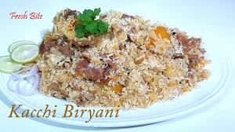
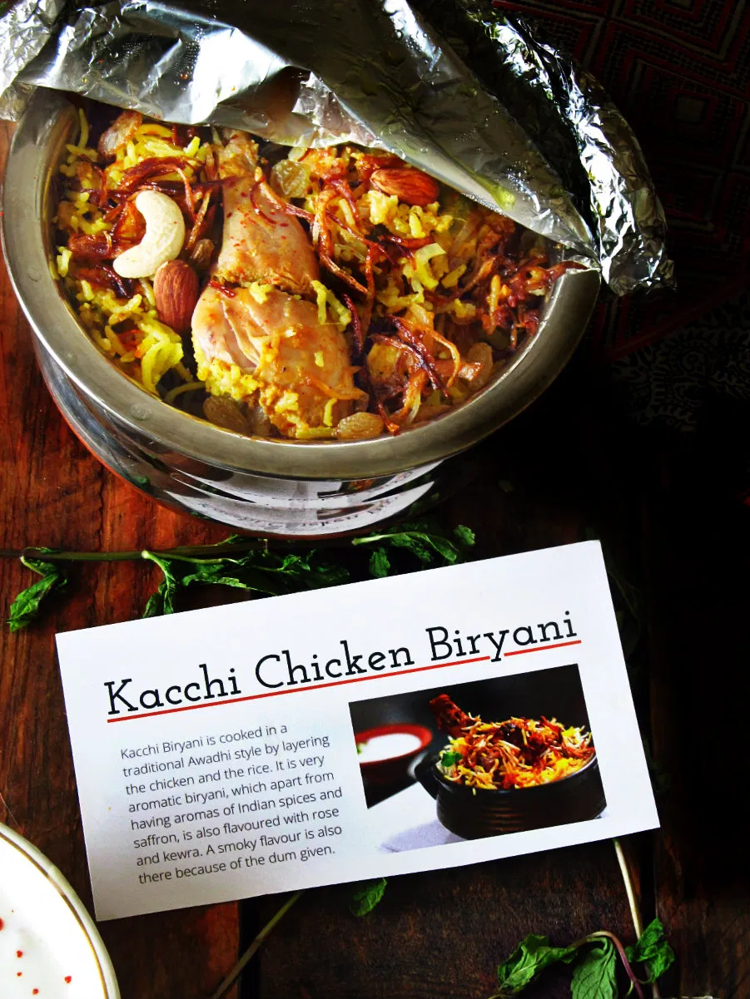
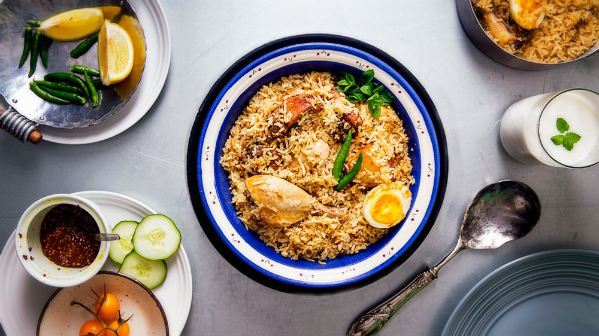
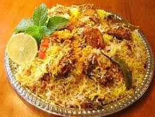
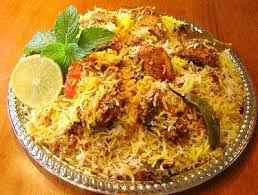

The History of Kacchi-Biryani
Biryani encompasses a heritage of classical South Asian cuisine. Its complexity and skill to produce marks it as one of the finer delicacies of our time. Originally, it was invented during the Mughal Empire. Mughal Emperor Shah Jahan’s Queen, Mumtaz Mahal is reportedly thought to have inspired the dish in the 1600’s. On a visit to the Indian army barracks, she found the soldiers heavily undernourished. She requested the chef to prepare something that combined both meat and rice and provided a balance of rich nutrition and protein. What the chef created was biryani. Mumtaz MahalBecause of its connection to the royal courts of the Mughal Empire, it also stands out as a dish reserved for the most special of occasions. The Mughal Emperors were known to lavish in luxury, wealth and fine dining, and biryani became a perfect staple dish to suit. The name derives from the Persian word bery?(n) which means fried or roasted. Birian means ‘fried before cooking’. .



“Kacchi biryani is a little painstaking because the meat you are going to use in this is raw and you put it at the bottom of a pan cooking slowly for a longer time. So the end result is more flavourful and more tasty, and keeps the meat very juicy.” Of course, the way the dish is prepared has adapted in small ways over the years and now each state has its own specific style of cooking. Lucknow (formerly Awadh) biryani uses the most original recipe. It is cooked using the ‘dum pukht’ method and it is regularly known as Dum Biryani. ‘Dum pukht’ literally translates from Persian as ‘slow oven’. It is one of the most refined methods of cooking, used in both India and Pakistan for the last 200 years. The cooking process takes place over a low flame where ingredients are put in a sealed container to allow the meats to tenderise in their own juices. Peshawari BiryaniThis also means that less spices are used than in normal Indian cooking. Instead, fresh spices and herbs are used to enhance the flavour and texture of the meat. The slow cooking process will encourage the herbs to release their maximum flavour. Once cooked and the seal is lifted, and the aroma of the tender meat is simply mouth-watering. A handi, or a round heavy-bottomed pot is the best to use as it allows little steam to escape. Calcutta Biryani emerged when the British Raj deposed Nawab Wajid Ali Shah in 1856. The Nawab people introduced the dish to Calcutta. Calcutta Biryani is made with whole boiled potatoes and meat. Interestingly, during the period, the recession had meant that meat had to be replaced with potatoes, and it has stuck ever since. Hyderabad Biryani is somewhat of a sought after speciality. It was created after Aurangzeb appointed Niza-ul-Mulk as the new ruler of Hyderabad. He took the recipe with him and it spread to other parts of India. His chefs reportedly created almost 50 different recipes that used fish, shrimp, quail, deer and hare meat. This is where kacchi biryani was also perfected. The most common dishes are: Tahari biryani – name given to the vegetarian version where meat is replaced with a variety of vegetables and potatoes. Peas and different kinds of beans are usually used. Mutton biryani – either lamb or goat meat. Chicken biryani Egg biryani Shrimp biryani Fish Biryani Daal Biryani Peshawari Biryani uses no meat. Instead, red and white beans, Kabuli chana, black gram, and green peas are layered in between the rice. Cashew nuts and almonds are also added, as well as rose water and saffron to add a rich density of flavour. Today, biryani has been very much adapted to individual and personal styles. Any Asian restaurant will serve it as one of their speciality dishes. Interestingly, you can tell a lot about the heritage and background of a person in the way they cook certain foods, and biryani is no different. Once a dish fit for royalty, it has most certainly become one of South Asia’s most prized trademarks.

 
